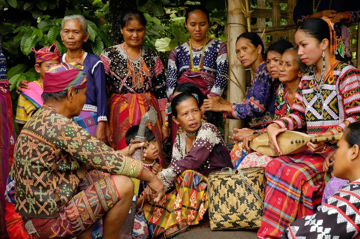

Philippine Indigenous Knowledge, Systems and Practices
Indigenous Peoples (IPs), also known as Indigenous Cultural Communities (ICCs), are distinct groups in the Philippines who have preserved their traditions, customs, and governance systems long before colonization.
This website presents the historical, international, and national legal foundations that regulate and protect the rights of Indigenous Peoples, including the Indigenous Peoples’ Rights Act of 1997 (IPRA) and the United Nations Declaration on the Rights of Indigenous Peoples (UNDRIP).
